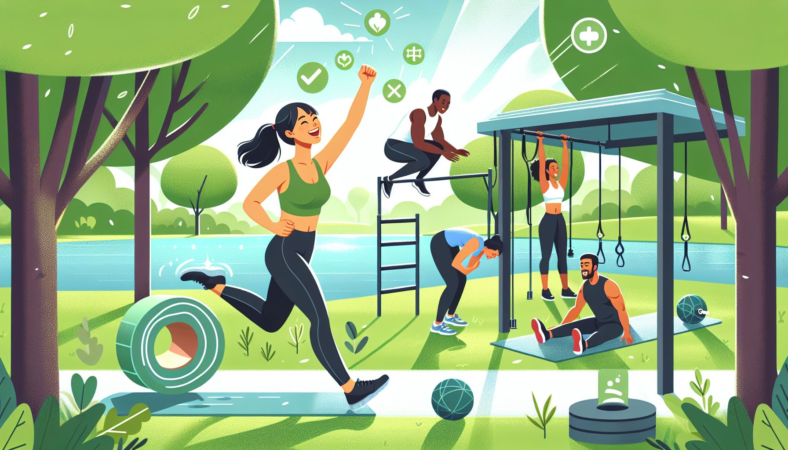
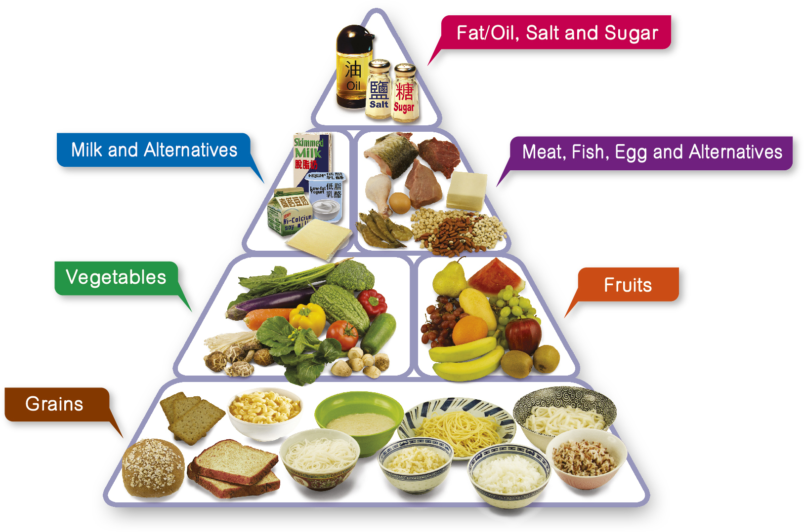
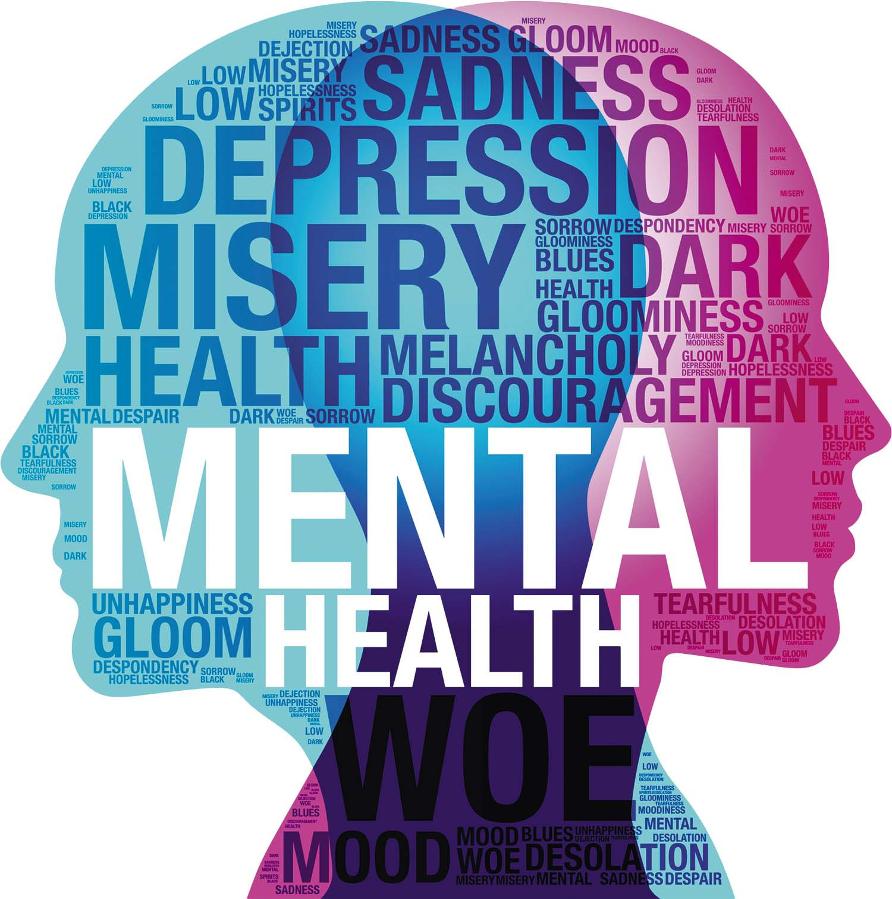
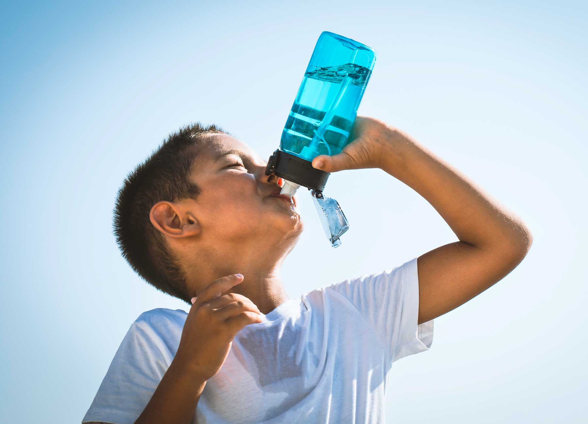

Exercise Regularly
Commit to 30 minutes of moderate physical activity at least 5 days a week.
4 pointsSelect the health actions you take (or could take). See how your choices add up and what impact they could create.

Commit to 30 minutes of moderate physical activity at least 5 days a week.
4 points
Follow dietary guidelines: 5 portions of fruit/veg daily, reduce ultra-processed foods.
3 points
Access counselling, practise mindfulness, and check in regularly on your emotional well-being.
5 pointsAim for 7–9 hours of sleep per night with a consistent routine and no screens before bed.
3 points
Give time to health charities, community clinics, or awareness campaigns related to SDG 3.
4 points
Counter misinformation by sharing verified health advice from trusted sources online.
2 pointsSelected actions: 0
Total impact score: 0 / 21
Start selecting actions above to see your impact level.